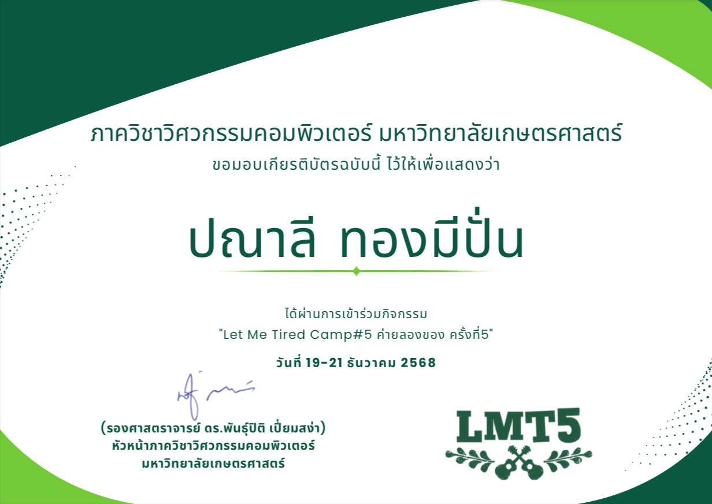

ค่าย "Let Me Tried Camp #5"
ดิฉันได้เข้าร่วมค่าย Let Me Tried Camp #5 ค่ายลองของ ครั้งที่ 5 คณะวิศวกรรมศาสตร์ ภาควิศวกรรมคอมพิวเตอร์ ณ วันที่ 19-21 ธันวาคม 2568 ซึ่งเป็นค่ายกิจกรรมด้านคอมพิวเตอร์และการเขียนโปรแกรม โดยได้เรียนรู้พื้นฐานด้านเทคโนโลยี ฝึกทักษะการคิดอย่างเป็นระบบ และลงมือทำโปรเจกต์จริง ทำให้ดิฉันได้ฝึกการนำความรู้มาประยุกต์ใช้ในการสร้างผลงาน รวมถึงพัฒนาทักษะการแก้ไขปัญหาและการทำงานร่วมกับผู้อื่น